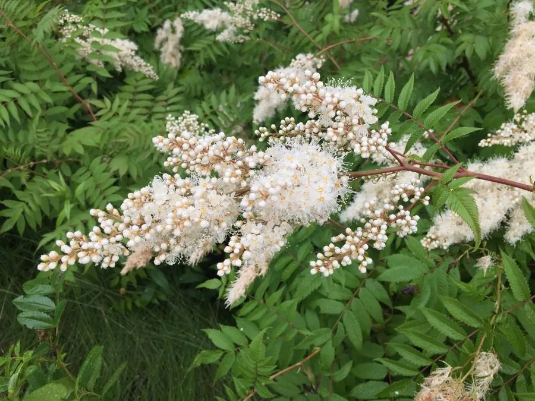

灌木与花木 · 植物界
珍珠梅 Sorbaria sorbifolia

中国北方常见的落叶灌木，夏季开白色小花、花序如珍珠缀满枝头，耐寒耐阴，是北方庭院与绿地的观赏植物。
- 分类
- 门被子植物门纲木兰纲目蔷薇目科蔷薇科属珍珠梅属
- 栖息环境
- 海拔 1500 米以下的山坡、林下与城市绿地，耐寒耐阴，适应性强
- 地理分布
- 中国东北、华北及西北地区，朝鲜半岛、日本、俄罗斯远东也有分布
- 保护级别
- 暂无评估；中国未列入国家重点保护野生植物名录
物种志
珍珠梅为落叶灌木，高可达 2 m，枝条开展；奇数羽状复叶，小叶 13–21 枚，披针形，边缘具重锯齿。花期 6–8 月，大型圆锥花序顶生，长可达 30 cm，由多数白色小花组成，花径约 6 mm，花蕾圆润如珍珠，故得名“珍珠梅”；蓇葖果长圆形，成熟时开裂，种子细小。
珍珠梅分布于中国东北、华北及西北地区，也见于朝鲜半岛、日本、俄罗斯远东，喜光、耐寒、耐阴，适应性强，对土壤要求不严，在北方城市中生长良好。夏季白花成串、花蕾如珠，花期长，是北方庭院、公园与林下绿化的优良观花灌木；耐修剪，也可用于绿篱。茎皮与枝条可入药，有活血散瘀之效；珍珠梅对有害气体抗性较强，适合工矿区绿化。
形态与习性
- 株高可达 2 m，枝条开展
- 花期6–8 月，花序长可达 30 cm
- 果期9–10 月，蓇葖果开裂
- 光照喜光，也耐阴
- 水分喜湿润，也耐旱
- 土壤适应性强，各类土壤均可生长
- 主要用途庭院与林下观赏、绿篱、茎皮入药
趣味知识
- 珍珠梅的花蕾圆润洁白，像一颗颗珍珠缀在枝头，因此得名。
- 珍珠梅的圆锥花序可长达 30 cm，是北方夏季重要的观花灌木。
- 珍珠梅耐寒耐阴，在北方林下与建筑北侧也能正常生长开花。
- 珍珠梅对有害气体抗性较强，适合工矿区与城市绿化。